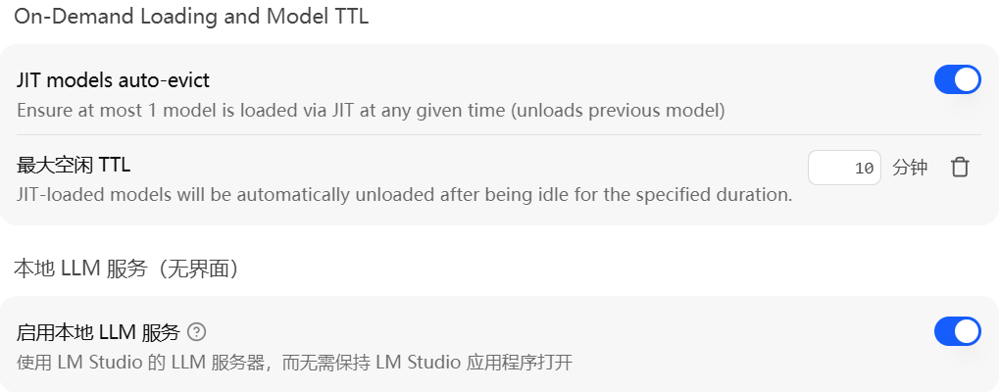
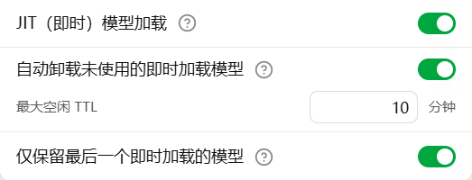
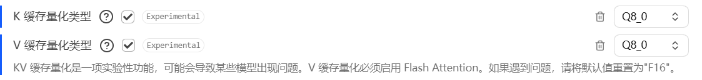

本地部署 Hy-MT2 翻译模型
5月21日，腾讯开源了新版本的翻译模型Hy-MT2，号称已经接近最顶尖的水平。
我其实一直有本地部署翻译模型的需求，主要是用来翻译网页和PDF文档。之前翻译网页用的是微软翻译，表现差强人意；翻译PDF用的是DeepSeek的API，效果还可以。
之所以网页翻译不用DeepSeek的API，一个是由于高并发有时会导致翻译出错，另一个则是涉及到敏感词汇的时候，DeepSeek会拒绝翻译，导致有时看个国外的新闻都翻译不了，更不用说一些特殊文本的翻译了。
1. 部署量化模型（7B）
我直接使用LM Studio部署。最新版的 LM Studio 支持后台运行、自动加载和卸载模型，使用起来非常方便。


可以直接在LM Studio中下载模型tecent/Hy-MT2-7B-GGUF，嫌慢的话也可以手动去镜像网站下载Hy-MT2-7B-Q4_K_M.gguf，放到%USERPROFILE%\.lmstudio\models\tencent\Hy-MT2-7B-GGUF目录下。
调整加载时的参数如下：
- 上下文长度：官方推荐
4k，我为了翻译长文，设置成了20k； - 温度：官方推荐
0.7； - Top K采样：官方推荐
20； - 重复惩罚：官方推荐
1.05； - Top P采样：官方推荐
0.6，但是我最终设为了0.8（理由见后文）。
其它暂时保持不变即可。
点击「Developer」界面中的「Server Settings」→「Manage Tokens」，可以配置API Key，之后就可以像其它的API一样使用了。
2. K&V缓存量化测试
在这种配置下，推理是可以正常进行的。但是有两个问题：
-
由于我的显卡（RTX4060）的显存只有8G，在任务管理器里可以看到，为了把模型和K&V缓存都加载到显存中，实际上是已经部分把系统的其它任务占用的显存挤到了共享显存（即内存）中去了。
由于我的最主要的用处是配合浏览器的沉浸式翻译使用，浏览器是会占用一部分显存的，这也许会影响浏览器的性能（纯猜测担心）。
-
推理的速度只能说勉强够用，输出只有大约18~20 tokens/s。
我在这个帖子中看到，使用llama的时候可以开启K&V缓存量化。实际上LM Studio也提供了这个选项，毕竟它的后端其实就是llama.cpp：

开启Q8_0或者Q4_0缓存量化之后，显存占用分别下降了约0.5G和1G，这样加载模型的时候，就基本不会影响到其它程序了。同时输出速度快了1倍，达到35~38 tokens/s。
不过，一个奇怪的观察是，在实际使用中，Q8缓存量化的输出速度比Q4基本要快2~3 tokens/s。
不过，缓存量化对于输出结果有多大的影响，我是不确定的。在Reddit上的一些分享中可以看到，缓存量化对于长上下文（超过8k）、工具调用的影响比较大。但是在翻译任务中，上面两种情况基本都不存在。因此我决定实际测试一下。
另外，我还想测试一下，1.8B的模型和7B的模型到底有多少区别。
- 测试模型：
Hy-MT2-7B : Q4_K_M和Hy-MT2-1.8B : Q8_0 - K&V缓存量化类型：
F16（默认）、Q8_0和Q4_0 - 测试数据数据集：
google/wmt24pp，只使用en-zh_CN（英译中）子集。 - 推理工具：
llama-cpp-python - 评分工具：
sacrebleu - 翻译prompt：官方推荐的第一个英文prompt
一共测试了三次。第一次直接使用默认的对话补全，后两次使用OpenAI v1格式的对话补全，并分别把翻译prompt分别放到user prompt和system prompt中进行对比。
不过，在写代码的时候，第一次的对话补全使用了官方推荐的推理参数，后两次的忘了加了，使用的是默认的推理参数。
具体结果如下。
- 使用默认的对话补全：
| 模型 | K&V缓存量化 | BLEU | chrF++ |
|---|---|---|---|
| Hy-MT2-1.8B : Q8_0 | F16 | 34.07 | 18.27 |
| Q8_0 | 34.07 | 18.27 | |
| Q4_0 | 34.07 | 18.27 | |
| Hy-MT2-7B : Q4_K_M | F16 | 59.20 | 43.74 |
| Q8_0 | 59.20 | 43.74 | |
| Q4_0 | 59.20 | 43.74 |
- 使用user prompt：
| 模型 | K&V缓存量化 | BLEU | chrF++ | 时间 |
|---|---|---|---|---|
| Hy-MT2-1.8B : Q8_0 | F16 | 36.62 | 20.55 | 06:49 |
| Q8_0 | 36.62 | 20.55 | 07:30 | |
| Q4_0 | 49.97 | 29.96 | 07:21 | |
| Hy-MT2-7B : Q4_K_M | F16 | 63.49 | 45.78 | 14:47 |
| Q8_0 | 46.98 | 33.24 | 15:43 | |
| Q4_0 | 46.98 | 33.24 | 15:37 |
- 使用system prompt：
| 模型 | K&V缓存量化 | BLEU | chrF++ | 时间 |
|---|---|---|---|---|
| Hy-MT2-1.8B : Q8_0 | F16 | 49.98 | 25.38 | 06:32 |
| Q8_0 | 49.98 | 25.38 | 07:06 | |
| Q4_0 | 55.64 | 32.20 | 07:12 | |
| Hy-MT2-7B : Q4_K_M | F16 | 59.20 | 43.74 | 14:36 |
| Q8_0 | 59.20 | 43.74 | 15:08 | |
| Q4_0 | 63.49 | 45.78 | 15:09 |
关于BLEU分数的介绍
BLEU（双语评估替补）是一种算法，用于评估从一种语言机器翻译成另一种语言的文本的精确度或准确度。 自定义翻译器使用 BLEU 指标作为传达翻译准确性的一种方式。
BLEU 分数是一个 0 到 100 之间的数字。 0 分表示翻译质量低，翻译中没有任何内容与引用匹配。 分数为 100 表示与引用完全相同的完美翻译。 不需要达到 100 分 - BLEU 分数在 40 到 60 之间表明翻译质量高。
── by Microsoft
怎么说呢，结果有些意外：
Q8量化的1.8B模型只能说可用，算不上好用。Q4量化的7B模型算是达到了好用的程度。- 使用OpenAI v1格式的对话补全，输出结果有明显提升，对于
1.8B的模型尤为明显。 - 同样的prompt，放在user prompt和system prompt里面的差别居然这么大。
Q4缓存量化的评分居然比不量化的时候还要高？？？特别是对于1.8B的模型尤其明显，BLEU分数达到了50分的临界水平。
第二个结果完全出乎了我的意料。于是我不信邪，有使用官方的推荐参数针对Q4的缓存量化重新测试了一遍，结果如下：
| 模型 | prompt | K&V缓存量化 | BLEU | chrF++ | 时间 |
|---|---|---|---|---|---|
| Hy-MT2-1.8B : Q8_0 | user | Q4_0 | 48.85 | 25.12 | 07:23 |
| Hy-MT2-1.8B : Q8_0 | system | Q4_0 | 53.64 | 31.13 | 07:00 |
| Hy-MT2-7B : Q4_K_M | user | Q4_0 | 63.49 | 45.78 | 15:12 |
| Hy-MT2-7B : Q4_K_M | system | Q4_0 | 51.47 | 34.30 | 15:18 |
可以看到，Q8量化的模型+Q4量化的K&V缓存，表现确实很好，这和一些地方的推荐（缓存量化精度≥模型量化精度）不一致。
但是Q4量化的模型+Q4量化的K&V缓存，分数波动就比较大了。
后来，我又使用top_p=0.8的参数（其它参数保持推荐不变），针对7B模型重新测了一下，结果如下：
| 模型 | prompt | K&V缓存量化 | BLEU | chrF++ | 时间 |
|---|---|---|---|---|---|
| Hy-MT2-7B : Q4_K_M | user | Q4_0 | 50.65 | 34.41 | 16:04 |
| Hy-MT2-7B : Q4_K_M | system | Q4_0 | 63.49 | 45.06 | 15:52 |
又和上面的结果不一样了。
我又把翻译prompt从英文换成了中文（依然是官方推荐的第一个），结果如下：
| 模型 | prompt | K&V缓存量化 | BLEU | chrF++ | 时间 |
|---|---|---|---|---|---|
| Hy-MT2-7B : Q4_K_M | user | F16 | 59.20 | 43.74 | 14:58 |
| Q8_0 | 59.20 | 43.74 | 15:43 | ||
| Q4_0 | 59.20 | 43.74 | 15:43 | ||
| system | F16 | 59.20 | 43.74 | 15:04 | |
| Q8_0 | 59.20 | 43.74 | 15:42 | ||
| Q4_0 | 59.20 | 43.74 | 15:43 |
这回结果倒是非常稳定。
3. 部署非量化模型（1.8B）
我的显存是足够部署1.8B模型的非量化版本的，因此我想对比一下，1.8B的非量化模型，和7B的量化模型，究竟孰优孰劣。
以前就听说过一句话，低精度量化的大模型要优于非量化的小模型。从直觉上来说确实是这样的。
这次我决定自己检验一下。
我使用之前安装好的vllm（0.10.2版本），运行
1 | VIRTUAL_ENV=.venv_vllm uv run vllm serve tencent/Hy-MT2-1.8B \ |
使用OpenAI sdk的时候无法指定响应的参数，因此使用的是vllm检测到的模型默认参数：
1 | { |
只有top_p参数与官方推荐不同。
测试结果如下：
| 模型 | prompt | BLEU | chrF++ | 时间 |
|---|---|---|---|---|
| Hy-MT2-1.8B | user | 52.64 | 33.26 | 11:55 |
| system | 56.68 | 35.17 | 11:03 |
可以看到，结果明显优于Q8量化的版本，BLEU分数超过了50，已经属于好用的范围了。
但是，的确也还是不如Q4量化的7B模型。
这验证了上面的感觉是正确的。
之后我又使用官方推荐参数top_p=0.6重新测试了一次。
由于之前的虚拟环境被我不小心破坏了，加上之前安装虚拟环境的时候手动下载的一些包也早就删掉了，于是我就干脆使用Docker来运行vllm了（版本是0.19.2）。命令如下：
1 | docker run --gpus all -it --rm \ |
测试结果如下：
| 模型 | prompt | BLEU | chrF++ | 时间 |
|---|---|---|---|---|
| Hy-MT2-1.8B | system | 54.82 | 32.91 | 10:24 |
基本和上面的结果是一样的，不过略微差一些。这也是前面重测top_p=0.8并最终使用这个参数的原因。
4. 最终配置
考虑到我还有翻译长文的需要，最终还是选择使用Q8_0级别的缓存量化。
另外，我在测试中还发现，K和V的缓存量化最好选择同一个类型。
虽然高精度量化的K缓存和低精度量化的V缓存能够提升效果（没有完全测试，但是确实可以降低PPL），但是输出速度严重变慢。
5. 沉浸式翻译
我使用Trancy和KISS Translator两个插件来进行沉浸式翻译。
Trancy的配置非常简单，添加自定义引擎就可以了：
- Model Name:
hy-mt2-7b - Engine Name:
LM Studio - API Key:
sk-lm-**************** - API Interface Address:
http://127.0.0.1:1234/v1/chat/completions
KISS Translator的使用稍微复杂一些，主要优势有两个：
-
一是可以针对特定网站指定翻译或不翻译哪些部分。
-
另一个则是可以针对特定网站启用术语表，优化翻译结果。
需要注意的是，必须开启聚合功能，术语表才能发挥作用。
6. 配合Cherry Studio使用
为了翻译长文，可以在Cherry Studio中创建助手，把翻译prompt和术语表放到助手的提示词中，这样就不用每次再重复输入了。
一些需要注意的地方：
- 助手的「上下文数」务必设为0，否则可能会直接返回上一个翻译的结果！
- 每次输入尽量控制在2k tokens以内，否则会出现中间漏翻的情况，或者翻译完第一行就结束了。
官方推荐max_tokens=4096还是有道理的，小模型处理长文的能力还是差一些。 - 小模型对于指令遵循的能力也要差一些。例如，我要求它保持原始段落、保持Markdown格式，但是有时还是无法满足要求。